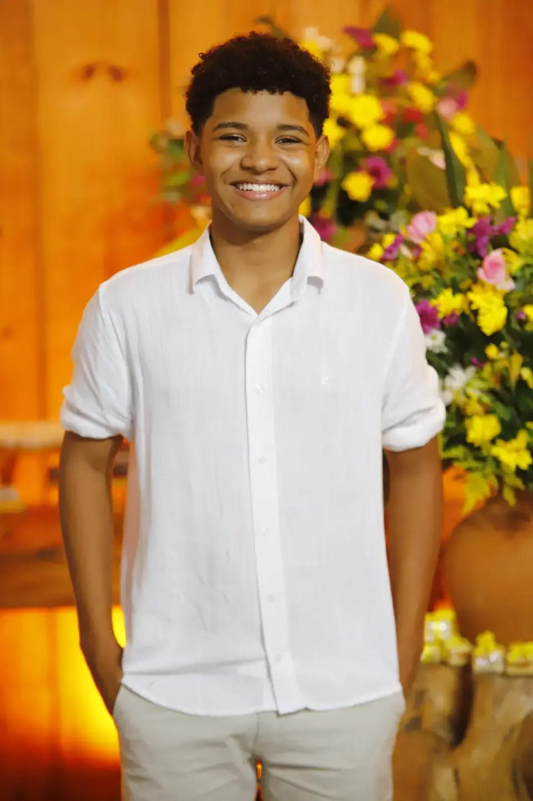

Projeto Mousse
Aplicação desenvolvida integrando front-end e back-end para gerenciamento de dados de vendas de doces em instituições de ensino.
Ver códigoDesenvolvedor em formação, apaixonado por lógica e por criar coisas que funcionam.
Técnico em Informática no IFCE – Campus Fortaleza
Um pouco de onde eu vim e para onde quero ir.
Meu nome é Maurício de Sena de Araújo e estou cursando o Técnico em Informática no IFCE, no campus de Fortaleza. Foi lá que comecei a ter contato de verdade com programação e percebi que era isso que eu queria fazer.
Gosto muito de lógica de programação e de resolver problemas passo a passo. Quando algo não funciona, fico curioso até descobrir o motivo. Estou sempre estudando linguagens e ferramentas novas e tentando colocar tudo em prática em projetos pequenos.
Agora estou atrás do meu primeiro estágio na área de T.I., para aprender com uma equipe de verdade e contribuir no que eu puder.

O que eu venho estudando e usando nos meus projetos.
Além do código: lógica de programação, resolução de problemas, aprendizado contínuo e trabalho em equipe.
Emblemas de Python que conquistei na Cisco Networking Academy.
Alguns dos meus principais repositórios desenvolvidos durante os estudos.
Aplicação desenvolvida integrando front-end e back-end para gerenciamento de dados de vendas de doces em instituições de ensino.
Ver códigoAplicação desenvolvida utilizando python e algumas bibliotecas como o pandas, para tratamento de dados e geração de gráficos com python.
Ver códigoSistema voltado para a gestão de um petshop aplicando os conceitos de Programação Orientada a Objetos.
Ver códigoWebsite institucional e interativo focado na apresentação do projeto social e comunitário.
Ver código